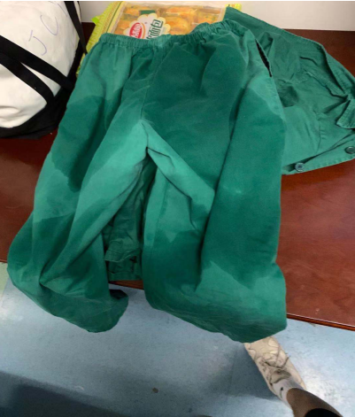

武汉一线医生眼中的困难：“最主要是供氧问题”
原文链接 备份链接 *************▲************* 刘大钺。 （采访对象供图/图） 全文共*2013*字，阅读大约需要5分钟。 各地支援的物资已经是到了，一问，说这东西还有很多，但是找谁领，不知道，这个渠道不太 …
湖南援鄂护士在武汉金银潭医院ICU五日记丨新冠肺炎亲历
2020-02-01 14:32 作者：刘颂辉 来源：中国经营网
本报记者 刘颂辉 上海报道
“在前往武汉之前，我做好充足的准备接受各种困难，然而当我真正融入到武汉疫情战役后才发现，从疫情发生到现在，还坚持在岗位的武汉前线医务人员有多么不容易。”在武汉市金银潭医院重症监护室驰援的第三天，中南大学湘雅二医院血液净化中心护士刘亮写下这样一段话。
新型冠状病毒感染肺炎疫情爆发以后，刘亮和4名血液净化护士组成的国家医疗队从湖南长沙出发，驰援疫情防疫工作。
这支平均年龄在28岁的医疗队，仅在20分钟时间里就完成了快速招募。他们中有人忙于医疗救援被汗水浸湿衣服，有人在ICU病房里度过了30岁生日。
1月31日，《中国经营报》记者试图采访刘亮及他的同事，但由于医务工作繁忙，并未成功。不过，记者从医院方面获取了其每天写下的一线日记。

（刘亮护士在武汉市金银潭医院。）
摘口罩2小时仍留压痕
由中南大学湘雅二医院组成的援鄂医疗队5名护士分别是主管护师侯亦平（队长）、主管护师黄艳清、护师李婉贞、护师钟晓平、护师刘亮。刘亮是该支医疗队中唯一的男护士。
1月27日中午12点，5人从长沙出发，赶赴新型冠状病毒感染的肺炎疫情最前沿武汉市金银潭医院。
刘亮被派往支援的是收治病情最重患者的医院南七楼病区。报到以后，穿好防护服进入监护室里面，进一步熟悉监护室的环境。“这里的病人的病情都非常重，病情变化也是非常迅速。”他在日记中写道。
1月29日0时~4时，刘亮协同其他医务人员管理四名危重病人，每名病人的床头护理级别都显示醒目的两个字——“特级”，前线医务工作者穿着足足五层厚的衣服来完成抽血、血气分析、打针等各项护理措施。同时，还需要时刻保持警惕呼吸机、监护仪上的数据。
谈及在医院重症监护室的工作，刘亮记录道：“6个小时过去，脱下防护服，感觉轻松了好多，这才发现，防护服真的好闷！对着手机镜头整理头发时发现，脸颊上口罩带子的压痕还在，这时我摘下口罩已经差不多过去2个小时了。”
1月29日下午4点，刘亮在支援队医务人员的指导下管理5名患者，在厚厚的防护服下不停歇工作四个小时。“一切细小的动作都变得如此困难，尿不湿似乎都是多余的，汗水早已经湿透衣服。”他回忆道。
在ICU度过30岁生日
新型冠状病毒感染的肺炎疫情牵动着全国人民的心，湖南有一大批医务工作者逆向挺进最危险的地方湖北省武汉市，开展医疗援助。
“下午6点，我完成了今天的值班任务。脱下厚厚的防护服，走出隔离病区的时候，突然想起来今天是自己30岁的生日。走在院区里，我在心中默默许下今年的生日愿望：愿疫情早日结束，愿所有的患者都能康复，愿所有医务人员都能平安回家！”1月29日，中南大学湘雅二医院血液净化中心主管护师候亦平在生日这天的工作地点是武汉市金银潭医院南六楼病区的重症监护室，主要工作是为患者进行连续性肾脏替代治疗（CRRT）。
据同行的主管护师黄艳清介绍，在医院，医护人员各有分工，更多的事则相互协作。医生看见护士工作忙，就会帮着采集动脉血做血气分析，一起帮忙给病人翻身拍背，给病人喂食。同事之间也会相互关注防护服有没有穿戴好，有没有吃饭等等。
事实上，早在1月25日晚，湖南省首批援助医疗队乘坐高铁前往湖北。医疗人员共计137人，其中有43名医生和93名护理人员。
据湖南省卫健委官网披露，1月29日，湖南省迅速集结首支援助湖北应对新型冠状病毒感染的肺炎国家中医医疗队预备队。仅仅半天的时间，参与驰援的单位共有700余名医务工作者主动请缨志愿奔赴前线。预备队中有8名医生，22名护士。队员中最大年龄54岁,最小为22岁。
1月29日，武汉天气转晴。刘亮在日记中写道：“尽管防疫工作强度高，武汉疫情战役已坚持一月有余，金银潭医院的前线战士让我看到国之担当，这似乎比武汉今日的阳光更能温暖人。”
（编辑：石英婧 校对：翟军）
* 除《中国经营报》署名文章外，其他文章为作者独立观点，不代表中国经营网立场。
* 未经本网授权，任何单位及个人不得转载、摘编或以其它方式使用上述作品，违者将被追究法律责任。
* 凡本网注明“来源：中国经营网” 或“来源：中国经营报-中国经营网”的所有作品，版权均属于中国经营网（本网另有声明的除外）。
* 如因作品内容、版权和其它问题需要同本网联系的，请在30日内进行。
* 有关作品版权事宜请联系：010-88890046 邮箱：banquan@cbnet.com.cn
原文链接 备份链接 *************▲************* 刘大钺。 （采访对象供图/图） 全文共*2013*字，阅读大约需要5分钟。 各地支援的物资已经是到了，一问，说这东西还有很多，但是找谁领，不知道，这个渠道不太 …
原文链接 备份链接 “一百多人来自上海不同的医院，大家首先要内部磨合，我们的医护人员还要与武汉当地医护人员磨合。我们计划用3-5天来完成磨合，然后科学分配，提高工作效率。” 文 | 黄 祺 今日全国新冠肺炎确诊人数过万，武汉的重症患者还在 …
原文链接 备份链接 “我倒是不很担心自己，就有点担心做得不够好、或者给团队拖后腿，毕竟经验有限。” 全文2216字，阅读约需4分钟 1月30日凌晨3点，护士王皓脱下最后一层脚套，兜着已经发肿的手，离开武汉协和医院西院的隔离区。 1月27 …
原文链接 备份链接 新型冠状病毒疫情像是一场突如其来的阴霾，在这个冬天笼罩了华中大地。相较于最受关注的武汉市民，周边城市的人们，像是处在阴霾边缘，遭受侵袭，却又不常被看见。面对重重困难，孝感、黄冈、黄石、信阳、荆州、天门……各个城市的百姓 …
原文链接 备份链接 支援武汉的医护人员已上千，地方900多人，军队450人，随后将再派1600多人。 武汉医护人员身心俱疲，难以应对不断增长的病例和民众的恐慌。 外援的到来，缓解了他们的负担。不少援汉医护人员感到，仅从肺炎诊治难度而 …